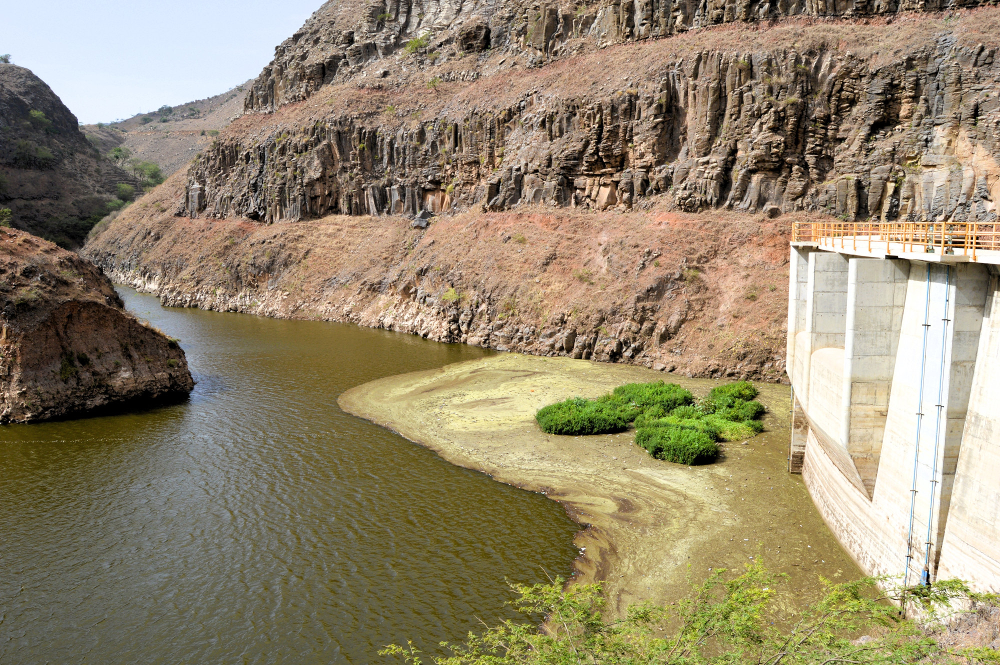
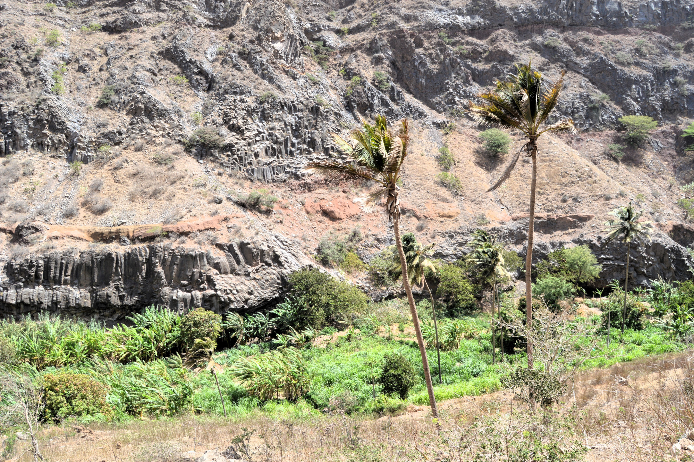
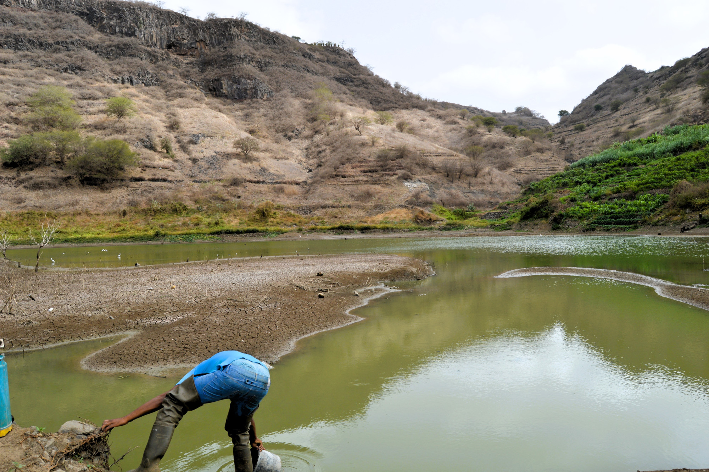
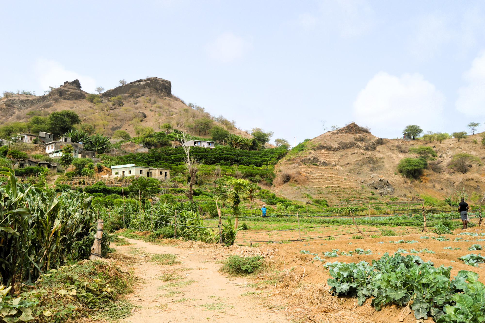

Evaluation of the Impact of Portuguese-Financed Infrastructures in Cape Verde
A Novafrica project, developed for Instituto Camões, evaluating the impact of Portuguese-Financed Infrastructures in Cape Verde.
In 2021, I participated in an impact evaluation project for Nova SBE’s Novafrica knowledge center, assessing the impact of various infrastructures financed by a Portuguese credit line in Cape Verde. This project was commissioned by Instituto Camões, the Portuguese cooperation agency, which required an independent impact evaluation to present to the OECD Development Assistance Committee.
The primary objective was to evaluate the impact of five different infrastructures financed under a Portuguese cooperation credit line. These infrastructures included:
- Figueira Gorda irrigation reservoir
- Saquinho irrigation reservoir
- Expansion of the Praia commercial harbor
- Expansion of the Porto Novo commercial harbor
- Sal photovoltaic power station
As an agronomist by training, I was responsible for conducting a comprehensive evaluation of the two reservoirs.
This project presented significant challenges for me, as it had become somewhat of a political quagmire. On one hand, the construction of these reservoirs had evolved into a highly contentious political issue. This initiative was initially promoted around 2013-2014 by the previous PAICV government, involving the construction of seven reservoirs. However, three of these reservoirs quickly became visible failures. Banca Furada failed to retain any water due to unforeseen geological constraints, Salineiro never had significant water due to a lack of rain in the southern part of Santiago Island, and Canto Cagarra was flooded with debris following a torrential rain event. With parliamentary elections in 2016, the opposition party at the time, MpD, capitalized on these failures to exploit the prevailing negative views on irrigation reservoirs to their advantage. After the 2016 election, which changed the parliament’s composition, MpD assumed office and significantly curtailed further investment in the irrigation reservoirs, effectively limiting the potential success of the infrastructures. Simultaneously, they used these failures as a source of political capital when criticizing PAICV, now in the opposition.
On the other hand, negotiations were underway for a new credit line between the two states. The MpD government had a vested interest in demonstrating the success of these projects to make securing a new credit line a logical and justifiable step.
As part of our initial assessment and data gathering efforts, we conducted approximately a dozen interviews, involving both local officials and foreign experts who had worked on the projects. The ambiguity surrounding the projects was immediately apparent during interviews with local officials and civil servants. Those more aligned with the current government, while questioning the viability of developing reservoirs in Cape Verde, emphasized their commitment to getting the most out of the built infrastructure. Others, not politically aligned with the current government, lamented how the lack of investment in the infrastructures had condemned them to low impact, if not complete failure. The latter also speculated on the potential indirect impact of the reservoirs in recharging groundwater resources.
In contrast, the message from foreign experts was significantly different. They had been involved only in the initial stages and had not interacted with the current political party. They highlighted the pressure the projects had faced to deliver the reservoirs but expressed doubts about the deployment of irrigation distribution networks.
In fact that was the situation on the ground. The irrigation network had just been inaugurated by the current government, right in time for the 2021 election cycle. So since the reservoirs’ construction in 2014/2015, they had remained without an irrigation network. Our initial analysis of the situation was complemented with satellite imagery from the Corpernicus network that confirmed that none of the areas that were supposed to benefit from the investment had any signs of irrigated farming.
This was the data we had to work with before we visited the infrastructures in June 2021. In our visits, and with the assistance of a local team that spoke the creole, we conducted a couple of hundreds of questionnaires to both farmers, produce peddlers (an important local figure of stakeholder) and local business. Our questionnaires were designed to assess if there had been an expansion of production, of irrigation, a change in the type of crops produced, on the type of commerce being conducted, and the general view on the investment by the stakeholders.
Saquinho
The situation in Saquinho was challenging. The Saquinho reservoir is situated in a narrow gorge overlooked by the Santa Catarina plateau, with a significant height difference between the two. Its initial intention was to allow the irrigation of the fields on the plateau; however, not only were there significant energy costs to pump the water to such heights, but the plateau is also constantly battered by strong winds, making it less suitable for irrigated agriculture without further investments.

Moreover, the construction of the reservoir had blocked a pre-existing irrigation gallery, which left it upstream from the reservoir itself, providing water to the Tabugal basin farmers. Consequently, the construction of the reservoir not only resulted in no actual use for the gathered water but also led to a reduction in water availability for the farmers of the Tabugal basin, where irrigated farming had been practiced prior to its construction. When we visited the area, an alternative irrigation network that supplied water to the Tabugal basin had recently been inaugurated. However, after more than six years without a water supply, many of the fields had been abandoned. We could see visible signs of coconut and mango trees that had died due to the lack of water.

The disruption in water availability had devastated local farming and had a severe impact on the livelihoods of the farmers in the area. Furthermore, the absence of road infrastructure created additional challenges for the small-scale farmers working there, as they were forced to transport their produce either manually or with the assistance of donkeys. One positive aspect that certainly needs further attention from local authorities and planning specialists is the fact that although there had been a drought for several years, the stream had running water. Surely a sign of the positive impact of the reservoir in the regions ground-water levels.
Figueira Gorda
To our great surprise, the situation in Figueira Gorda was completely different from that in Saquinho. During our interviews, some officials had mentioned farming in the vicinity of the reservoir, with farmers directly exploiting the reservoir’s water, which we confirmed via satellite imagery. However, we had no idea of the extent of these activities.

On the ground, we witnessed a dynamic ecosystem of small farmers and produce peddlers who bought produce in the fields and sold it in the urban center. Small-scale farmers with small motor pumps had improvised solutions that allowed them to irrigate their fields. With the available water, they transformed their crop profile from low-value cash crops like maize and cassava to higher-value horticultural crops like tomatoes and bell peppers. This, in turn, created new opportunities for the produce peddlers, who, with a greater supply of high-value produce, expanded their businesses, further promoting demand for horticultural goods. A virtuous cycle was established, limited only by the amount of water available for irrigation.

In fact, the immediate vicinity of the reservoir had become so bustling with farmers, field laborers, and produce peddlers that a small informal restaurant had been established there to provide food and beverages to all who made their living there.

Hence, what initially seemed like a failed project, once we visited the field, revealed itself to be a success. This was my first significant lesson on the importance of phronesis, highlighting the importance of immersing ourselves in the specifics of the context we are studying before reaching any conclusions based on preconceived theories and ideas.
Final assessment
Given what we encountered in the ground we gave two different assessments of the impact of the infrastructures. In Saquinho the impact was clearly negative. Although there was potential to revert the situation, the disruption in the supply of water and the lack of infrastructure to distribute produce had had a negative lasting impact in the local farming community. Usage of the newly inaugurated distribution network had to be promoted and better roads had to be developed. However, in Figueira Gorda, the scenario was completely different, the availability of water and ingenuity of the local farmers in exploiting it had transformed the region and created a dynamic ecosystem, that was generating income for a broad group of stakeholders.
The full report is publicly available on the Instituto Camões website.
Following the presentation of the report to Instituto Camões, in February 2022 we were invited to give a public presentation of our findings. You can find the presentation deck, also on the Instituto Camões website.
Below you will find the youtube video of the TCV report on the presentation.
Final thoughts and future works
It gave me immense pleasure to participate in this project. It was an incredibly enriching experience that not only allowed me to apply some of my agronomist knowledge that I hadn’t used in a long time but also pushed me out of my comfort zone and compelled me to develop new skills. One of these skills was a new way of looking at issues, understanding that problems aren’t always linear. Analysis can be ambiguous, and sometimes it requires a significant amount of context to interpret.
Another skill that I was compelled to develop during this project was writing. A considerable amount of time had passed since I wrote my master’s thesis, and I felt a bit out of practice (not that I was ever particularly practiced in it). Fortunately, one of my colleagues in the project provided me with valuable mentoring on writing. He advised me to simply start writing, begin from the end, or commence from where I felt most comfortable, but just to write. This advice was genuinely insightful and set me on the right path. Thanks to this guidance, I was not only able to write the report, but I also discovered something that brings me great pleasure. In fact, it was one of the factors that finally pushed me over the edge to start my PhD.
Regarding future projects, I intend in the near future to utilize the publicly available data that we gathered and, using Hirchman’s concept of the “hiding hand,” develop a study on how end-user bricolage can contribute to turning a failed project into a success.
I also believe there is ample research to be conducted in this field and environment. The solution to Cape Verde’s water issues isn’t straightforward. Given the variability of the monsoon rains in the country, reservoirs that allow for the storage of this water that would otherwise go to waste certainly play a role. It is crucial to conduct a broader study that assesses the diffuse impact of these reservoirs on groundwater levels, farming, and food security in their areas of influence.
Citation
@online{granja-correia2023,
author = {Granja-Correia, João},
title = {Evaluation of the {Impact} of {Portuguese-Financed}
{Infrastructures} in {Cape} {Verde}},
date = {2023-10-13},
url = {https://joao.granja-correia.eu/projects/project_20231013_Infra_CV/},
langid = {en}
}